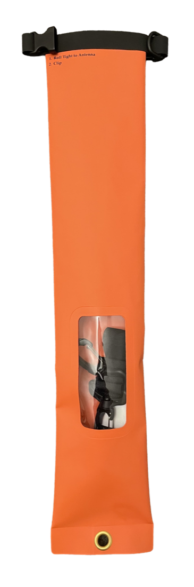
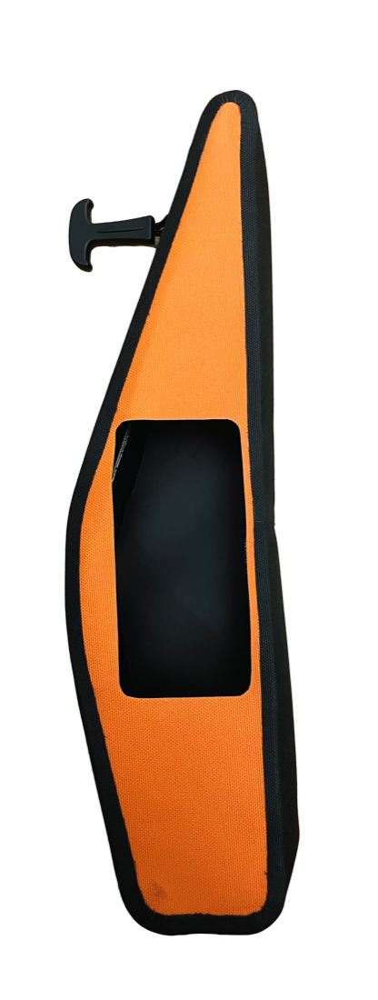

Roll-top seal · orange & black
Waterproof, strong, and durable material designed for long-term use in the marine environment. A clear window in the front keeps your radio visible, and the roll-top closure seals out water. Shoulder/chest strap included.
Bag dimensions may be customized to your radio — contact us before ordering.

Waterproof zipper · clear front window
A strong and durable waterproof zipper bag designed for long-term use in the marine and aquatic environment. The clear front window keeps your radio readable, and the waterproof zipper makes access quick. Shoulder/chest strap included.
Dimensions may be customized depending on the radio — contact us before ordering.